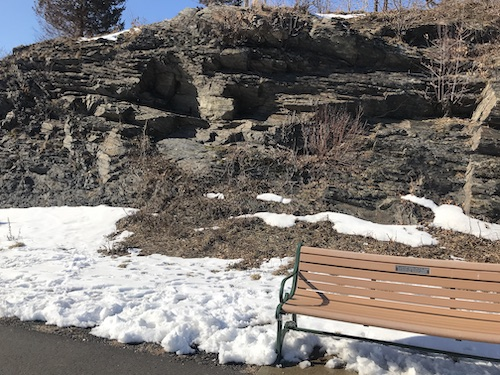
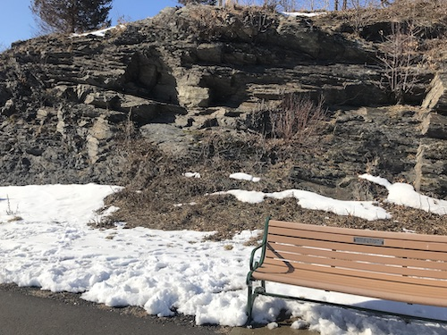

Savin Rock Beach


 


10/
full essayBut I feel that water and the land along it can offer a person so much peace and joy. While a river or lake doesn't appear to stretch toward infinity quite like oceans do, they can offer me the power of the immediate present by simplyifing my horizon. My dad understood and appreciated this power greatly.